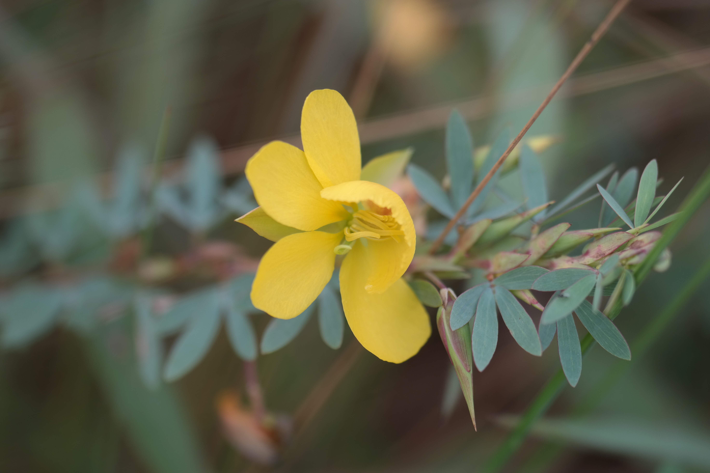
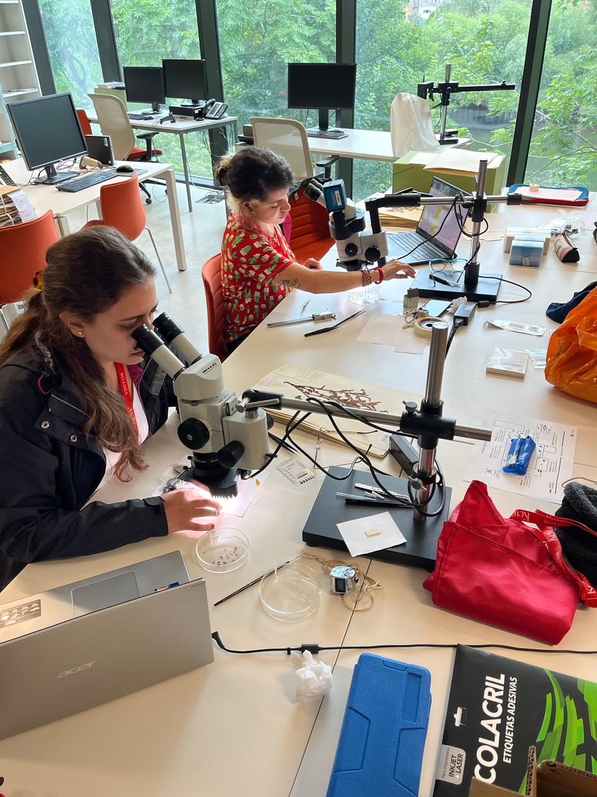
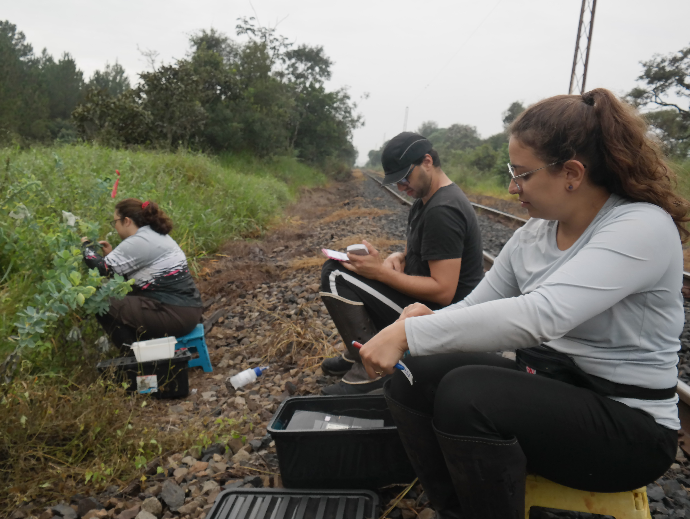

Bruna Campos Barbosa
Doutorado Direto pelo Programa de Evolução e Diversidade — Universidade Federal do ABC (UFABC)
- Biologia reprodutiva de plantas
- Evolução floral
- Polinização por vibração
Sobre
Seu projeto investiga a evolução da morfologia floral e das estratégias reprodutivas no gênero de leguminosas Chamaecrista, buscando compreender o papel da seleção exercida pelos polinizadores e por fatores ambientais na diversificação das flores de pólen. As interações entre plantas e polinizadores envolvem interesses distintos, que podem gerar conflitos na oferta e exploração de recursos florais. Nesse contexto, a variação morfológica das flores influencia a atração de polinizadores e o sucesso reprodutivo das plantas, estando potencialmente associada a diferentes estratégias reprodutivas, que variam da autopolinização à fecundação cruzada obrigatória. Embora essas relações sejam relativamente bem documentadas em angiospermas, ainda são pouco compreendidas em plantas com flores de pólen, que representam cerca de 8% desse grupo. Assim, o projeto investiga como fatores bióticos e abióticos podem ter influenciado a evolução e a diversificação das características florais ao longo do tempo. Para isso, foram integrados dados morfológicos obtidos de materiais herborizados e de coletas em campo a modelos evolutivos.
Graduada em Bacharelado em Ciências Biológicas pela Universidade Federal de São Paulo (UNIFESP), seus interesses de pesquisa são biologia reprodutiva, botânica, evolução e ecologia. Nos momentos livres, adora assistir séries, ler livros e fazer crochê.
Trajetória no LIPA
Clique em uma etapa para ver detalhes.
2017–2022 · UNIFESP
- Orientador:
- Anselmo Nogueira
- Bolsista:
- FAPESP
- Título:
- A eficiência na polinização em uma espécie de leguminosa com flores de pólen depende do ajuste morfológico com abelhas mamangavas?
2023– · UFABC
- Orientador:
- Anselmo Nogueira
- Coorientadora:
- Tamiris Daiane Delgado de Lima
- Título:
- Diversificação floral e das estratégias reprodutivas em espécies com flores de pólen: evolução da polinização por vibração em Chamaecrista.



